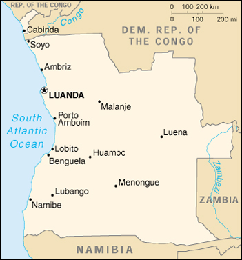

|
Angola | |
| Introduction Geography People Government Economy Communications Transportation Military Transnational Issues | ||
|  | ||
| Angola | Introduction | Top of Page |
| Background: | Civil war has been the norm in Angola since independence from Portugal in 1975. A 1994 peace accord between the government and the National Union for the Total Independence of Angola (UNITA) provided for the integration of former UNITA insurgents into the government and armed forces. A national unity government was installed in April of 1997, but serious fighting resumed in late 1998, rendering hundreds of thousands of people homeless. Up to 1.5 million lives may have been lost in fighting over the past quarter century. |
| Angola | Geography | Top of Page |
| Location: | Southern Africa, bordering the South Atlantic Ocean, between Namibia and Democratic Republic of the Congo |
| Geographic coordinates: | 12 30 S, 18 30 E |
| Map references: | Africa |
| Area: |
total:
1,246,700 sq km
land: 1,246,700 sq km water: 0 sq km |
| Area - comparative: | slightly less than twice the size of Texas |
| Land boundaries: |
total:
5,198 km
border countries: Democratic Republic of the Congo 2,511 km (of which 220 km is the boundary of discontiguous Cabinda Province), Republic of the Congo 201 km, Namibia 1,376 km, Zambia 1,110 km |
| Coastline: | 1,600 km |
| Maritime claims: |
contiguous zone:
24 NM
exclusive economic zone: 200 NM territorial sea: 12 NM |
| Climate: | semiarid in south and along coast to Luanda; north has cool, dry season (May to October) and hot, rainy season (November to April) |
| Terrain: | narrow coastal plain rises abruptly to vast interior plateau |
| Elevation extremes: |
lowest point:
Atlantic Ocean 0 m
highest point: Morro de Moco 2,620 m |
| Natural resources: | petroleum, diamonds, iron ore, phosphates, copper, feldspar, gold, bauxite, uranium |
| Land use: |
arable land:
2%
permanent crops: 0% permanent pastures: 23% forests and woodland: 43% other: 32% (1993 est.) |
| Irrigated land: | 750 sq km (1993 est.) |
| Natural hazards: | locally heavy rainfall causes periodic flooding on the plateau |
| Environment - current issues: | overuse of pastures and subsequent soil erosion attributable to population pressures; desertification; deforestation of tropical rain forest, in response to both international demand for tropical timber and to domestic use as fuel, resulting in loss of biodiversity; soil erosion contributing to water pollution and siltation of rivers and dams; inadequate supplies of potable water |
| Environment - international agreements: |
party to:
Biodiversity, Climate Change, Desertification, Law of the Sea, Ozone Layer Protection
signed, but not ratified: none of the selected agreements |
| Geography - note: | Cabinda is separated from rest of country by the Democratic Republic of the Congo |
| Angola | People | Top of Page |
| Population: | 10,366,031 (July 2001 est.) |
| Age structure: |
0-14 years:
43.31% (male 2,266,870; female 2,222,262)
15-64 years: 53.98% (male 2,847,089; female 2,748,091) 65 years and over: 2.71% (male 127,798; female 153,921) (2001 est.) |
| Population growth rate: | 2.15% (2001 est.) |
| Birth rate: | 46.54 births/1,000 population (2001 est.) |
| Death rate: | 24.68 deaths/1,000 population (2001 est.) |
| Net migration rate: | -0.34 migrant(s)/1,000 population (2001 est.) |
| Sex ratio: |
at birth:
1.05 male(s)/female
under 15 years: 1.02 male(s)/female 15-64 years: 1.04 male(s)/female 65 years and over: 0.83 male(s)/female total population: 1.02 male(s)/female (2001 est.) |
| Infant mortality rate: | 193.72 deaths/1,000 live births (2001 est.) |
| Life expectancy at birth: |
total population:
38.59 years
male: 37.36 years female: 39.87 years (2001 est.) |
| Total fertility rate: | 6.48 children born/woman (2001 est.) |
| HIV/AIDS - adult prevalence rate: | 2.78% (1999 est.) |
| HIV/AIDS - people living with HIV/AIDS: | 160,000 (1999 est.) |
| HIV/AIDS - deaths: | 15,000 (1999 est.) |
| Nationality: |
noun:
Angolan(s)
adjective: Angolan |
| Ethnic groups: | Ovimbundu 37%, Kimbundu 25%, Bakongo 13%, mestico (mixed European and Native African) 2%, European 1%, other 22% |
| Religions: | indigenous beliefs 47%, Roman Catholic 38%, Protestant 15% (1998 est.) |
| Languages: | Portuguese (official), Bantu and other African languages |
| Literacy: |
definition:
age 15 and over can read and write
total population: 42% male: 56% female: 28% (1998 est.) |
| Angola | Government | Top of Page |
| Country name: |
conventional long form:
Republic of Angola
conventional short form: Angola local long form: Republica de Angola local short form: Angola former: People's Republic of Angola |
| Government type: | transitional government, nominally a multiparty democracy with a strong presidential system |
| Capital: | Luanda |
| Administrative divisions: | 18 provinces (provincias, singular - provincia); Bengo, Benguela, Bie, Cabinda, Cuando Cubango, Cuanza Norte, Cuanza Sul, Cunene, Huambo, Huila, Luanda, Lunda Norte, Lunda Sul, Malanje, Moxico, Namibe, Uige, Zaire |
| Independence: | 11 November 1975 (from Portugal) |
| National holiday: | Independence Day, 11 November (1975) |
| Constitution: | 11 November 1975; revised 7 January 1978, 11 August 1980, 6 March 1991, and 26 August 1992 |
| Legal system: | based on Portuguese civil law system and customary law; recently modified to accommodate political pluralism and increased use of free markets |
| Suffrage: | 18 years of age; universal |
| Executive branch: |
chief of state:
President Jose Eduardo DOS SANTOS (since 21 September 1979); note - the president is both chief of state and head of government
head of government: President Jose Eduardo DOS SANTOS (since 21 September 1979); note - the president is both chief of state and head of government cabinet: Council of Ministers appointed by the president elections: President DOS SANTOS originally elected (in 1979) without opposition under a one-party system and stood for reelection in Angola's first multiparty elections 29-30 September 1992 (next to be held NA) election results: DOS SANTOS 49.6%, Jonas SAVIMBI 40.1%, making a run-off election necessary; the run-off was not held and SAVIMBI's National Union for the Total Independence of Angola (UNITA) repudiated the results of the first election; the civil war resumed |
| Legislative branch: |
unicameral National Assembly or Assembleia Nacional (220 seats; members elected by proportional vote to serve four-year terms)
elections: last held 29-30 September 1992 (next to be held NA) election results: percent of vote by party - MPLA 54%, UNITA 34%, others 12%; seats by party - MPLA 129, UNITA 70, PRS 6, FNLA 5, PLD 3, others 7 |
| Judicial branch: | Supreme Court or Tribunal da Relacao (judges are appointed by the president) |
| Political parties and leaders: |
Liberal Democratic Party or PLD [Analia de Victoria PEREIRA]; National Front for the Liberation of Angola or FNLA [disputed leadership: Lucas NGONDA, Holden ROBERTO]; National Union for the Total Independence of Angola or UNITA [Jonas SAVIMBI], largest opposition party has engaged in years of armed resistance; Popular Movement for the Liberation of Angola or MPLA [Jose Eduardo DOS SANTOS] ruling party in power since 1975; Social Renewal Party or PRS [disputed leadership: Eduardo KUANGANA, Antonio MUACHICUNGO]; UNITA-Renovada [Eugenio NGOLO "Manuvakola", leader]
note: about a dozen minor parties participated in the 1992 elections but won few seats and have little influence in the National Assembly |
| Political pressure groups and leaders: |
Front for the Liberation of the Enclave of Cabinda or FLEC [N'zita Henriques TIAGO; Antonio Bento BEMBE]
note: FLEC is waging a small-scale, highly factionalized, armed struggle for the independence of Cabinda Province |
| International organization participation: | ACP, AfDB, CCC, CEEAC, ECA, FAO, G-77, IAEA, IBRD, ICAO, ICFTU, ICRM, IDA, IFAD, IFC, IFRCS, ILO, IMF, IMO, Intelsat, Interpol, IOC, IOM, ITU, NAM, OAS (observer), OAU, SADC, UN, UNCTAD, UNESCO, UNIDO, UPU, WFTU, WHO, WIPO, WMO, WToO, WTrO |
| Diplomatic representation in the US: |
chief of mission:
Ambassador Josefina Perpetua Pitra DIAKIDI
chancery: 1615 M Street, NW, Suite 900, Washington, DC 20036 telephone: [1] (202) 785-1156 FAX: [1] (202) 785-1258 consulate(s) general: New York |
| Diplomatic representation from the US: |
chief of mission:
Ambassador Joseph G. SULLIVAN
embassy: number 32 Rua Houari Boumeddienne, Luanda mailing address: international mail: Caixa Postal 6484, Luanda; pouch: American Embassy Luanda, Department of State, Washington, DC 20521-2550 telephone: [244] (2) 345-481, 346-418 FAX: [244] (2) 346-924 |
| Flag description: | two equal horizontal bands of red (top) and black with a centered yellow emblem consisting of a five-pointed star within half a cogwheel crossed by a machete (in the style of a hammer and sickle) |
| Angola | Economy | Top of Page |
| Economy - overview: | Angola is an economy in disarray because of a quarter century of nearly continuous warfare. Despite its abundant natural resources, output per capita is among the world's lowest. Subsistence agriculture provides the main livelihood for 85% of the population. Oil production and the supporting activities are vital to the economy, contributing about 45% to GDP and 90% of exports. Violence continues, millions of land mines remain, and many farmers are reluctant to return to their fields. As a result, much of the country's food must still be imported. To fully take advantage of its rich resources - gold, diamonds, extensive forests, Atlantic fisheries, and large oil deposits - Angola will need to end its conflict and continue reforming government policies. Despite the increase in the pace of civil warfare in late 1998, the economy grew by an estimated 5% in 2000. The government introduced new currency denominations in 1999, including 1 and 5 kwanza notes. Internal strife discourages investment outside of the petroleum sector, which is producing roughly 800,000 barrels of oil per day. Angola has entered into a Staff Monitored Program (SMP) with the IMF. Continued growth depends on sharp cuts in inflation, further economic reform, and a lessening of fighting. |
| GDP: | purchasing power parity - $10.1 billion (2000 est.) |
| GDP - real growth rate: | 4.9% (2000 est.) |
| GDP - per capita: | purchasing power parity - $1,000 (2000 est.) |
| GDP - composition by sector: |
agriculture:
7%
industry: 60% services: 33% (1999 est.) |
| Population below poverty line: | NA% |
| Household income or consumption by percentage share: |
lowest 10%:
NA%
highest 10%: NA% |
| Inflation rate (consumer prices): | 325% (2000 est.) |
| Labor force: | 5 million (1997 est.) |
| Labor force - by occupation: | agriculture 85%, industry and services 15% (1997 est.) |
| Unemployment rate: | extensive unemployment and underemployment affecting more than half the population (2000 est.) |
| Budget: |
revenues:
$928 million
expenditures: $2.5 billion, including capital expenditures of $963 million (1992 est.) |
| Industries: | petroleum; diamonds, iron ore, phosphates, feldspar, bauxite, uranium, and gold; cement; basic metal products; fish processing; food processing; brewing; tobacco products; sugar; textiles |
| Industrial production growth rate: | NA% |
| Electricity - production: | 1.475 billion kWh (1999) |
| Electricity - production by source: |
fossil fuel:
32.2%
hydro: 67.8% nuclear: 0% other: 0% (1999) |
| Electricity - consumption: | 1.372 billion kWh (1999) |
| Electricity - exports: | 0 kWh (1999) |
| Electricity - imports: | 0 kWh (1999) |
| Agriculture - products: | bananas, sugarcane, coffee, sisal, corn, cotton, manioc (tapioca), tobacco, vegetables, plantains; livestock; forest products; fish |
| Exports: | $7.8 billion (f.o.b., 2000 est.) |
| Exports - commodities: | crude oil 90%, diamonds, refined petroleum products, gas, coffee, sisal, fish and fish products, timber, cotton |
| Exports - partners: | US 54%, South Korea 14%, Benelux 11%, China 7%, Taiwan 6% (1999) |
| Imports: | $2.5 billion (f.o.b., 2000 est.) |
| Imports - commodities: | machinery and electrical equipment, vehicles and spare parts; medicines, food, textiles, military goods |
| Imports - partners: | South Korea 16%, Portugal 15%, US 13%, South Africa 10%, France 8% (1999) |
| Debt - external: | $10.8 billion (2000 est.) |
| Economic aid - recipient: | $493.1 million (1995) |
| Currency: | kwanza (AOA) |
| Currency code: | AOA |
| Exchange rates: | kwanza per US dollar - 17,910,800 (January 2001), 10,041,000 (2000), 2,790,706 (1999), 392,824 (1998), 229,040 (1997), 128,029 (1996); note - in December 1999 the kwanza was revalued with six zeroes dropped off the old value |
| Fiscal year: | calendar year |
| Angola | Communications | Top of Page |
| Telephones - main lines in use: | 62,000 (1997) |
| Telephones - mobile cellular: | 7,052 (1997) |
| Telephone system: |
general assessment:
telephone service limited mostly to government and business use; HF radiotelephone used extensively for military links
domestic: limited system of wire, microwave radio relay, and tropospheric scatter international: satellite earth stations - 2 Intelsat (Atlantic Ocean) |
| Radio broadcast stations: | AM 34, FM 7, shortwave 9 (1999) |
| Radios: | 630,000 (1997) |
| Television broadcast stations: | 7 (1999) |
| Televisions: | 150,000 (1997) |
| Internet country code: | .ao |
| Internet Service Providers (ISPs): | 1 (2000) |
| Internet users: | 12,000 (1999) |
| Angola | Transportation | Top of Page |
| Railways: |
total:
2,771 km (inland, much of the track is unusable because of land mines still in place from the civil war)
narrow gauge: 2,648 km 1.067-m gauge; 123 km 0.600-m gauge (2000) |
| Highways: |
total:
76,626 km
paved: 19,156 km unpaved: 57,470 km (1997) |
| Waterways: | 1,295 km |
| Pipelines: | crude oil 179 km |
| Ports and harbors: | Ambriz, Cabinda, Lobito, Luanda, Malongo, Mocamedes, Namibe, Porto Amboim, Soyo |
| Merchant marine: |
total:
9 ships (1,000 GRT or over) totaling 39,305 GRT/63,067 DWT
ships by type: cargo 8, petroleum tanker 1 (2000 est.) |
| Airports: | 247 (2000 est.) |
| Airports - with paved runways: |
total:
31
over 3,047 m: 4 2,438 to 3,047 m: 8 1,524 to 2,437 m: 12 914 to 1,523 m: 6 under 914 m: 1 (2000 est.) |
| Airports - with unpaved runways: |
total:
216
over 3,047 m: 2 2,438 to 3,047 m: 5 1,524 to 2,437 m: 30 914 to 1,523 m: 96 under 914 m: 83 (2000 est.) |
| Angola | Military | Top of Page |
| Military branches: | Army, Navy, Air and Air Defense Forces, National Police Force |
| Military manpower - military age: | 18 years of age |
| Military manpower - availability: | males age 15-49: 2,480,016 (2001 est.) |
| Military manpower - fit for military service: | males age 15-49: 1,246,224 (2001 est.) |
| Military manpower - reaching military age annually: | males: 103,807 (2001 est.) |
| Military expenditures - dollar figure: | $1.2 billion (FY97) |
| Military expenditures - percent of GDP: | 22% (1999) |
| Angola | Transnational Issues | Top of Page |
| Disputes - international: | none |
| Illicit drugs: | increasingly used as a transshipment point for cocaine and heroin destined for Western Europe and other African states |
{kind=link}
{kind=link}